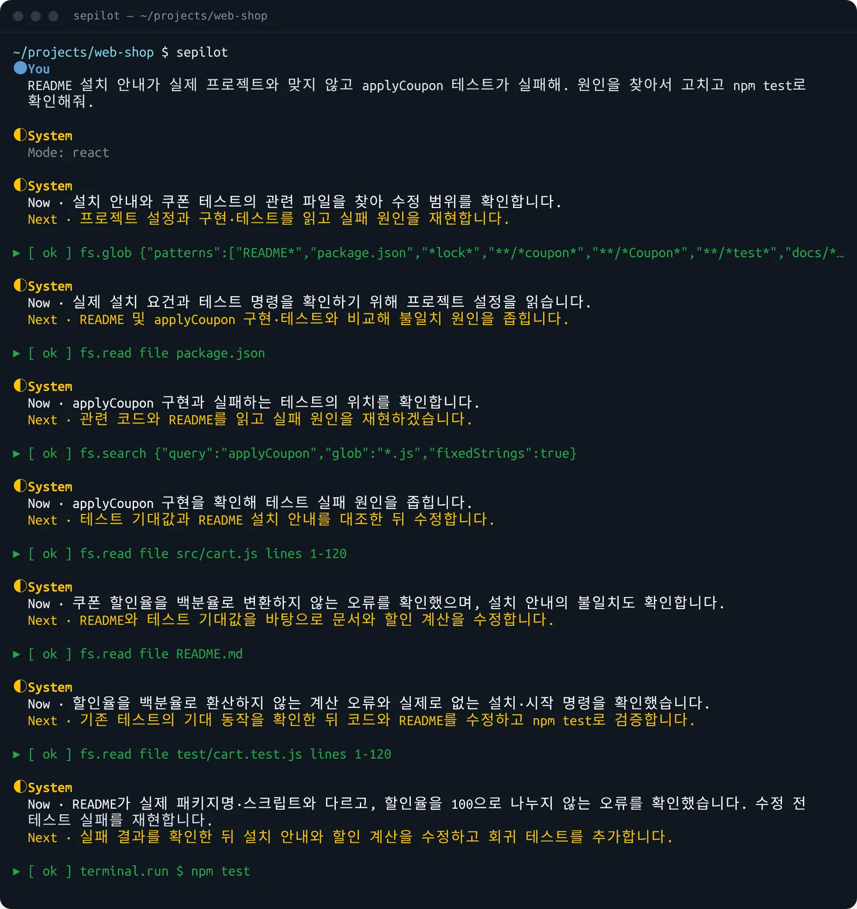
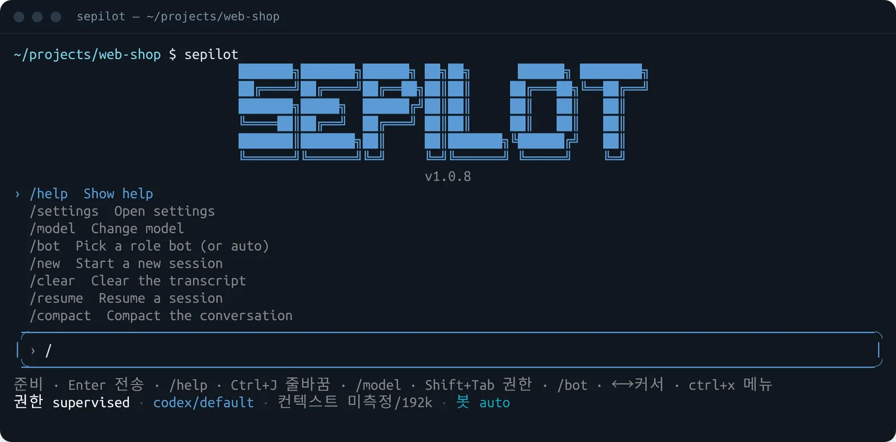
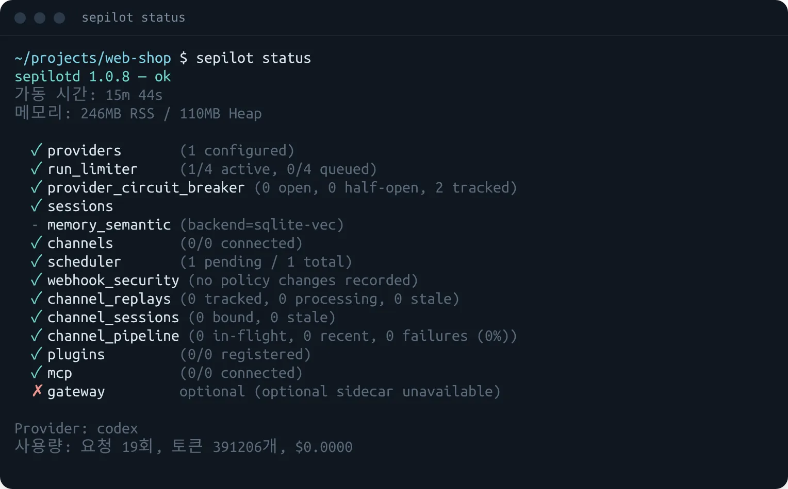

대화와 실행
한 번 묻거나, 스킬을 실행하거나, JSONL 작업을 한꺼번에 돌립니다.
- ask
- chat
- run
- batch
- -p
터미널 AI 에이전트
sepilot은 로컬 데몬 sepilotd를 내장한 단일 실행 파일입니다. 터미널에서 대화하며 파일을 읽고 고치고 명령을 실행하고, 같은 명령을 스크립트와 CI에서도 씁니다.
› 설치 안내가 틀렸어. README 고치고 테스트 돌려줘
계획: 파일 확인 → 문서 수정 → 테스트 실행
모드 버튼을 누르거나 버튼에 포커스한 채 Shift+Tab을 눌러 보세요. 같은 요청이라도 모드에 따라 자동으로 실행할 일과 승인을 받을 일이 달라집니다.
인자 없이 sepilot을 실행하면 터미널 기록 위에 이어서 그리는 TUI가 열립니다. 화면 전체를 차지하지 않으니 스크롤로 지난 작업을 그대로 돌아볼 수 있습니다.
@파일 첨부, 클립보드 이미지, !로 시작하는 로컬 셸 명령, 외부 편집기 작성을 지원합니다.
실행 중인 작업에도 즉시 적용됩니다. 권한은 정책 엔진이 판단하므로 모드를 바꿔도 금지된 도구가 열리지는 않습니다.
supervised모든 변경과 명령을 승인받습니다.accept-edits파일 편집은 바로, 명령은 승인받습니다.workspace-write작업 폴더 안의 편집만 바로, 명령은 승인받습니다.readonly살펴보고 답만 합니다.
실제 TUI 상태 줄. 승인 요청에는 한 번만, 이 세션 동안, 이 실행 동안, 항상 허용과 거부 중에서 고릅니다.
/를 누르면 모든 것이 나옵니다모델, 역할 봇, 실행 모드를 대화 중에 바꾸고, 패널을 열어 상태를 확인합니다.
/model /provider /bot /mode /thinking/new /resume /compact /rewind /fork /share/diff /approvals /tasks /jobs /usage /artifacts/skills /memory /mcp /rag /swarm /settings
바이너리에 데몬이 들어 있어 sepilot을 실행하면 필요할 때 띄웁니다. 데스크톱 앱과 같은 데몬을 함께 써서 세션과 설정을 공유합니다.
sepilot start · stop · restart · statussepilot daemon install-service로 로그인 시 자동 시작
대화형 TUI 밖에서도 모든 기능을 명령으로 씁니다. 전체 목록은 sepilot --help에서 확인하세요.
한 번 묻거나, 스킬을 실행하거나, JSONL 작업을 한꺼번에 돌립니다.
이어 가고, 갈라 시도하고, 파일 변경까지 되감고, 내보냅니다.
실행 중인 작업에 답하고, 방향을 바꾸고, 권한을 정합니다.
오래 걸리는 일을 나누고 예약해 결과를 메신저로 받습니다.
역할 봇, 사용자 에이전트, 사용자 슬래시 명령, 스킬을 관리합니다.
MCP 서버를 연결하고 도구·프롬프트·리소스를 관리합니다.
기억을 검색하고, 문서와 RAG 소스를 동기화합니다.
Claude Code, Codex, Gemini CLI, OpenCode를 swarm으로 띄우고 붙어서 봅니다.
메신저 채널, 웹훅, 이벤트 라우팅, 진단과 백업을 다룹니다.
표준 입력을 그대로 질문에 붙입니다.
git diff | sepilot ask "이 변경을 리뷰해 줘"
다른 도구가 진행 상황을 읽도록 스트리밍합니다.
sepilot -p "테스트 실패 원인을 찾아줘" \ --output-format stream-json
이번 턴에만 봇과 권한을 정합니다.
sepilot ask --bot code-reviewer \ --autonomy readonly "src/ 보안 점검"
터미널을 닫아도 데몬이 이어서 처리합니다.
sepilot ask --background --wait "릴리스 노트 초안"
sepilot jobs # 진행 중인 작업
Ollama, OpenAI, Anthropic, Gemini, Groq, Together, DeepSeek, OpenRouter, OpenAI 호환 엔드포인트, 로컬 Codex·OpenCode CLI.
즉시 응답, 도구 루프, 경량 coder와 다단계 deep-coder, 리서치·추론 그래프, 50여 개의 역할 봇.
파일 읽기·편집·패치, 터미널과 백그라운드 프로세스, 웹 검색·가져오기, 브라우저 제어, git, LSP 코드 탐색.
권한 모드와 정책 엔진, 기억되는 결정, 암호화된 비밀 저장소, 감사 로그, Docker·bubblewrap 샌드박스.
SQLite FTS5와 벡터 검색, MEMORY.md와 일일 노트, 리마인더, git·웹 동기화 RAG.
Telegram, Slack, Discord, Mattermost, Teams, LINE, WhatsApp, 웹챗, 웹훅, GitHub Issues.
설치 스크립트가 플랫폼에 맞는 GitHub Release를 받아 SHA-256 체크섬을 확인합니다. 설치 후 sepilot init으로 모델 제공자를 연결하세요.
Linux(x64, arm64), macOS(x64, arm64), Windows(x64).
curl -fsSL https://raw.githubusercontent.com/jhl-labs/sepilot-cli/main/packages/bundle/scripts/install.sh | shirm https://raw.githubusercontent.com/jhl-labs/sepilot-cli/main/packages/bundle/scripts/install.ps1 | iexsepilot upgrade로 합니다.
Node.js 22, pnpm 10이 필요하고, 단일 바이너리는 Bun으로 만듭니다.
git clone https://github.com/jhl-labs/sepilot-cli.git cd sepilot-cli pnpm install --frozen-lockfile && pnpm build ./install-cli.sh